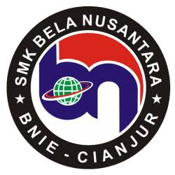
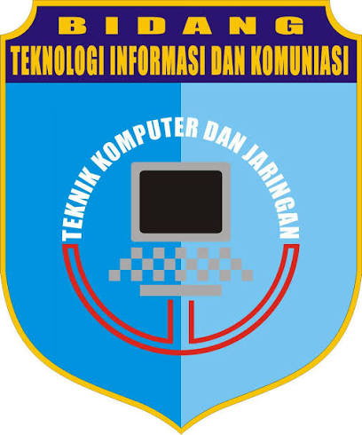
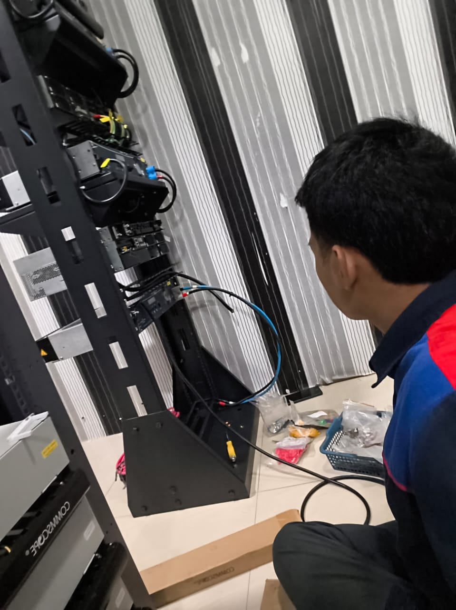
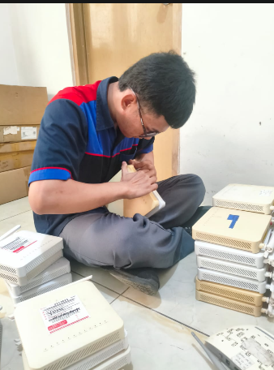
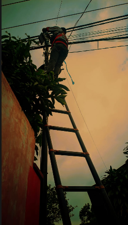
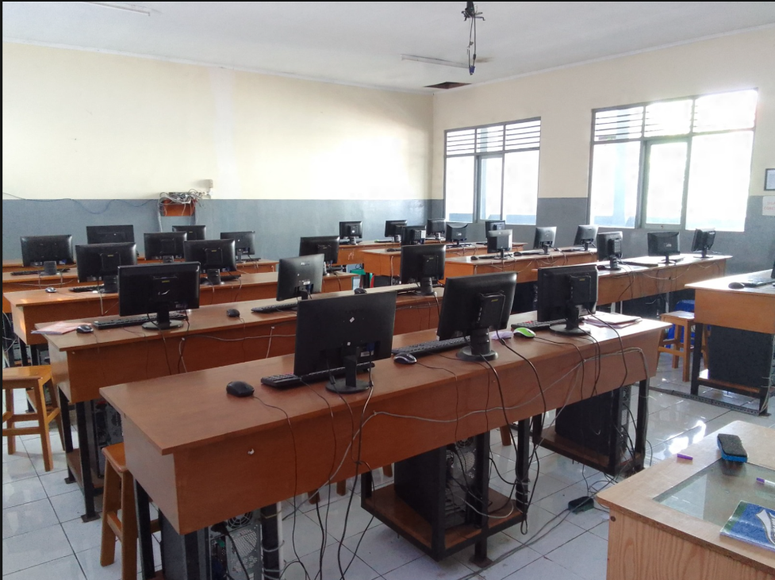
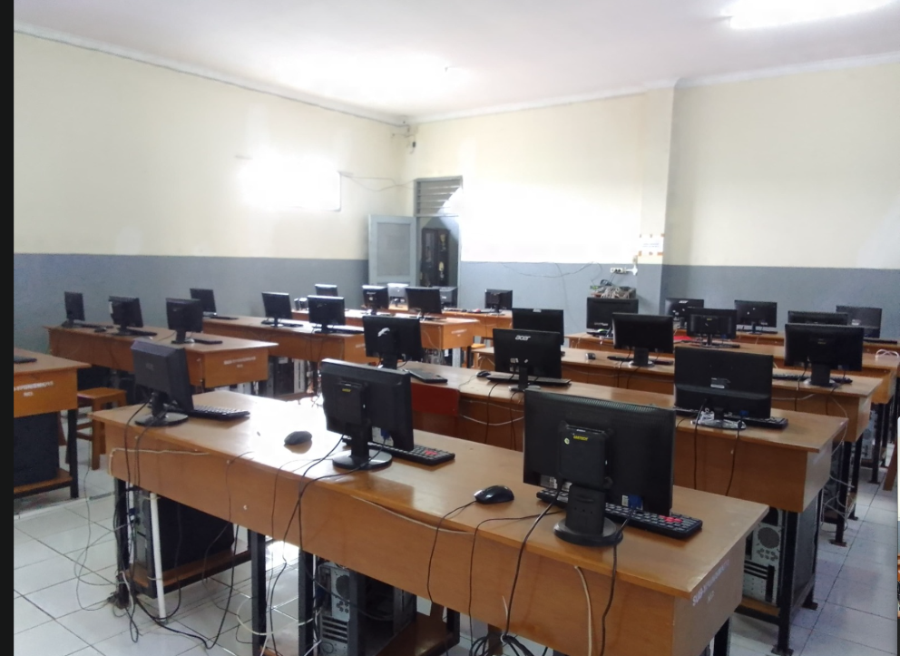
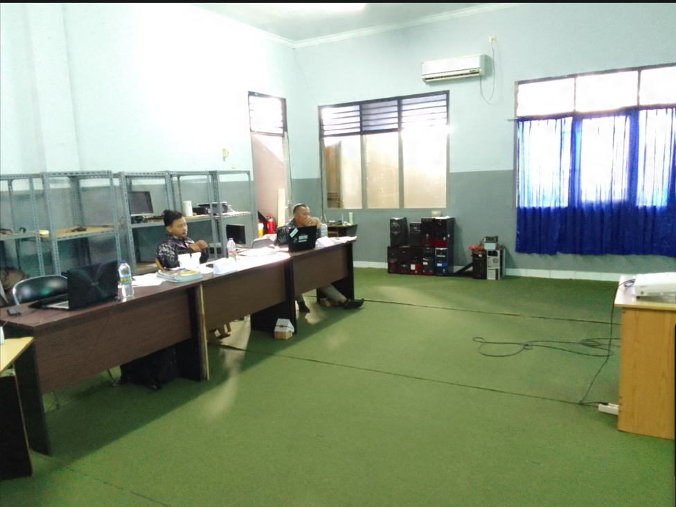

Pusat integrasi data kelompok 08, dokumentasi jaringan server, portofolio laboratorium, dan sistem CV interaktif siswa SMK Bela Nusantara Cianjur.
BUKA WEBPAGE CV KELOMPOK 08 →Informasi resmi SMK Bela Nusantara Cianjur & Program Keahlian TJKT
SMK Bela Nusantara Cianjur adalah lembaga pendidikan kejuruan yang berfokus pada pengembangan keterampilan berbasis teknologi, disiplin tinggi, dan kesiapan kerja guna mencetak tenaga profesional yang kompeten di era digital.
Teknik Jaringan Komputer dan Telekomunikasi (TJKT) mempelajari pengoperasian sistem komputer, jaringan lokal/luas, administrasi server Linux/Windows, keamanan siber, hingga teknologi fiber optik modern.
Klik pada salah satu baris modul di bawah untuk membuka silabus dan rincian materi teknis secara mendalam
| Kode Modul | Kompetensi Utama | Layanan & Teknologi | Status Penguasaan |
|---|---|---|---|
| MOD-01 | Jaringan & Routing | MikroTik RouterOS, Subnetting VLSM, VLAN, OSPF, Bandwidth Management | [EXPERT] |
| MOD-02 | System Administration | Debian 12, BIND9 DNS, Apache2 VirtualHost, DHCP Server, Samba Sharing | [EXPERT] |
| MOD-03 | Cybersecurity & Firewall | Filter Rules, Encrypted VPN (PPTP/L2TP), Port Forwarding NAT, SSL/TLS | [ADVANCED] |
| MOD-04 | Fiber Optic Infrastructure | FTTH Cable Splicing, Fusion Splicer, OTDR Measurement, ODP/ODC Wiring | [ADVANCED] |
| MOD-05 | Cloud & Virtualization | Proxmox VE, Docker Containerization, Local Cloud Storage (Nextcloud) | [ADVANCED] |
Klik salah satu modul gambar untuk menampilkan detail alur kerja dan hasil praktikum

Praktik penyusunan server fisik, tata kelola kabel patch panel, dan konfigurasi server lokal Debian.

Implementasi IP Address, routing statis/dinamis, serta pengujian sistem nirkabel Access Point.

Penarikan kabel outdoor, pengujian konektivitas antargedung, dan penerapan standar K3.
Klik salah satu modul gambar untuk melihat spesifikasi alat dan laboratorium

Perangkat PC spesifikasi tinggi untuk praktikum pemrograman, virtualisasi server, dan simulasi jaringan.

Fasilitas perakitan hardware, perbaikan perangkat keras, dan pengujian transmisi data.

Area kolaborasi siswa dalam merancang arsitektur jaringan dan persiapan proyek kelompok.